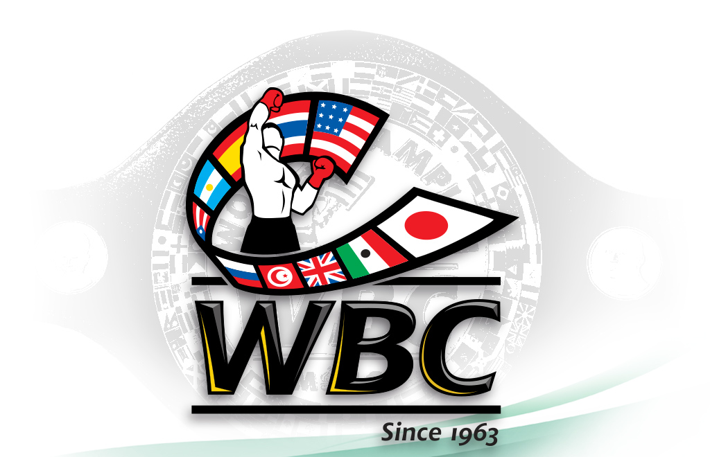

Ukrainian boxing journal
Выпуск №23
WBC против Поветкина
В допинг-пробе Русского Витязя обнаружен мельдоний в концентрации 72 нанограмма, что значительно меньше 1 микрограмма. Случаи, когда в допинг-пробе содержание мельдония менее 1 микрограмма и она взята до 1 марта 2016 года, сравнимы со случаями обнаружения препарата до 1 января 2016 года. Допускается, что спортсмен не принимал препарат умышленно после его запрета. Расследования по фактам употребления мельдония будут продолжены, если концентрация вещества превышает 15 микрограмм. Исходя из этого можно сделать вывод, что зафиксированное в организме боксёра присутствие препарата совершенно ничтожно, и вряд ли повлечёт за собой строгие санкции. По словам главы компании «Мир бокса» Андрея Рябинского, его подопечный был полностью осведомлён о том, что мельдоний вошёл в число запрещённых веществ, именно поэтому добровольно отказался от его употребления. «Концентрация мельдония, найденная в пробе Поветкина, очень низкая — 72 нанограмма. Вопрос только в том, как к этому сейчас отнесётся WBC. Мельдоний — очень специфический препарат. Непонятно, как он работает и за какое время выводится полностью. То, что Саша его принимал, — не секрет, но он делал это в сентябре прошлого года, когда препарат был официально разрешён.  По факту получается очень специфическая ситуация. Человек всегда употреблял только разрешённые препараты, но сейчас у него получается уже положительная проба, а остатки мельдония являются запрещённым препаратом. Как поступать в этой ситуации? Забор проб (их было четыре. — Прим. „Чемпионата“) производила ВАДA — американское добровольное допинг-агентство, с которым мы заключили соглашение по желанию WBC. Мы не возражали, потому что знали, что у нас чистый боксёр».
Уайлдер: Паркер побьет Фьюри
Чемпион мира по версии WBC в супертяжелом весе американец Деонтей Уайлдер заявил
о своем желании после защиты титула против своего соотечественника Джеральда Вашингтона
провести объединительный бой с чемпионом мира по версии WBO, которым, уверен Уайлдер,
после своего поединка с британцем Хью Фьюри останется новозеландец Джозеф Паркер.
В 2017-м я и моя команда будем сфокусированы на объединении поясов.
Я не заглядываю за спину Джеральду Вашингтона, но смотрю вперед.
После боя с Вашингтоном я иду за победителем боя Паркер - Фьюри,
в котором я прогнозирую победу Паркера.
Так что я отправляюсь в поход за титулом WBO Джозефа Паркера
, - сказал Деонтей Уайлдер.
Спаринг партнеры Джошуа и Кличко
Промоутер чемпиона мира по версии IBF в супертяжелом весе британца Энтони Джошуа Эдди Хэрн назвал имена боксеров, которые будут помогать Джошуа в подготовке к его апрельского боя с украинцем Владимиром Кличко. По словам промоутера, к спаррингам Джошуа приступит за семь недель до боя с Кличко, а помогать ему будут не менее четырех спарринг-партнеров, двумя из которых станут Джо Джойс и Фрейзер Кларк (оба - на фото). Джо Джойс, рост которого составляет 198 см, является серебряным призером Олимпийских Игр 2016 года, хотя многие считают, что он заслуживал победы в финальном поединке против француза Тони Йоки. Фрейзер Кларк - это второй номер сборной Великобритании по боксу в супертяжелом весе, его рост составляет 196 см. И Джо Джойс, и Фрейзер Кларк уже неоднократно помогали Энтони Джошуа в подготовке к его боям. Еще одним спарринг-партнером Джошуа в его подготовке к бою с Кличко, по информации Boxingnews.com.ua, может стать его новоиспеченный одноклубник Лоуренс Околи, рост которого составляет 196 см. Сам Околи уже подтвердил готовность помочь Джошуа в подготовке к самому важному бою в его карьере.
1000 грн.
1200 грн.
1500 грн.

Аренда ринга для тренировок: 100 гривен в день
"Всегда нелегко добираться до вершины. Но намного сложнее удержаться на ней на протяжении долгого времени." В.Кличко